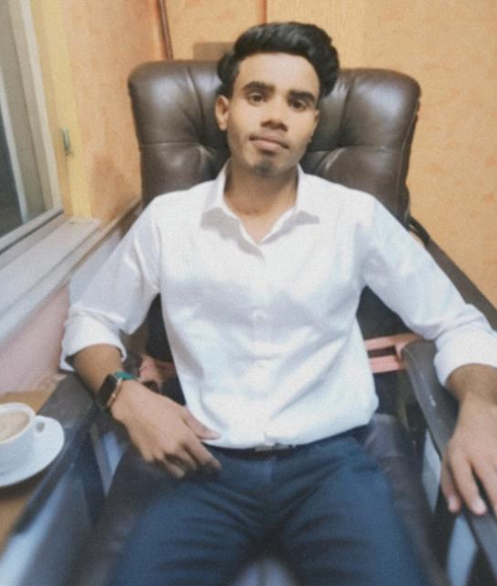

ROHAN YADHAV (EXPOSED): A Case Study in Unintentional Comedy
The man, the myth, the confusion
Meet Rohan Yadhav: 3 years of training. 0 years of growth

About Rohan – The Legend No One Asked For
Rohan is a long-term trainee with short-term focus. Originally aspiring for an MNC job (before the MNC collectively said “nah”), he pivoted into cabin crew training — a field requiring grace, communication, and emotional maturity... all of which he’s actively avoiding. Known for taking everything personally and nothing professionally,
Must Know Facts
Originally applied for an MNC… until the MNC applied back — for his removal
Decided to become cabin crew after realizing being a passenger required too much awareness
Specializes in misunderstanding instructions, overreacting to feedback, and laughing at jokes nobody made
Fluent in Broken English
😵 Emotionally Unavailable but Emotionally Volatile
Certified Yapper
Character Arc: Still buffering...
Skill Section – Endorsed by Nobody
Communication — ★☆☆☆☆
Teamwork — ★☆☆☆☆
Taking Criticism — 🌪️ (classified as natural disaster)
Maturity — Still under warranty
Being in the Wrong Place — ★★★★★ (Certified Pro)
The Love Triangle of Rohan
💌 One-sided affection for Asha
😭 The heartbreak when she joined Sun Knowledge and left him in Moon Confusion
Rohan's Greatest Hits (Top 5 Cringe Moments)
Rohan's Greatest Hits (Top 5 Cringe Moments)
“English is my 3rd language – I only speak it 0.3%”
“I’m not insecure, I just watch everyone like a hawk.”
“Teamwork makes the dream... me awkward.”
“Constructive criticism is bullying 😤”
“Let me switch career paths one more time for emotional reasons.”
Rohan’s Maturity Level: 12% — Updating since 2022…
Personality Not Found
🧠 Psychological Damage Caused by Rohan:
92% – Experts say it's irreversible without therapy and a restraining order.
🎡 Rohan’s Future Career Wheel
Can’t decide his path? Neither can he. Click to spin!